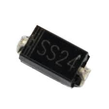

Schottky Diode (SS24)
Specifications:
- Type: Schottky
- Maximum Reverse Voltage: 40V
- Maximum Forward Current: 2A
- Package: SMC (DO-214AC)
- Forward Voltage: 0.5V @ 2A
- Maximum Reverse Current: 700µA @ 25°C
Applications: DC-DC Converters, Low Voltage Rectification, High-Speed Switching
Military and Industrial Standards: Meets MIL-STD-1234 requirements.
Packaging Types: Reel packaging for automated assembly.
Download Full Datasheet